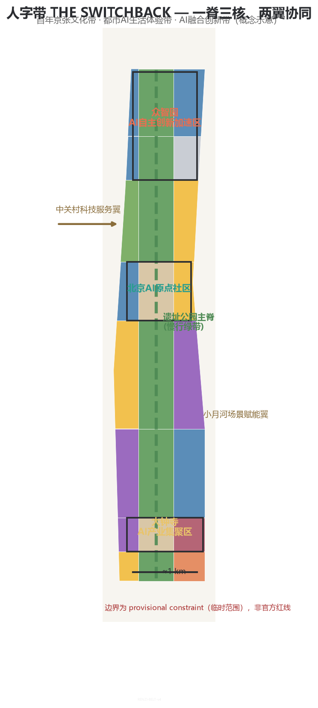
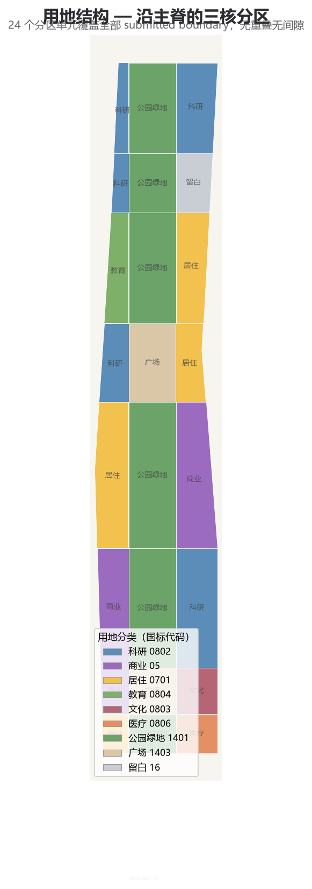
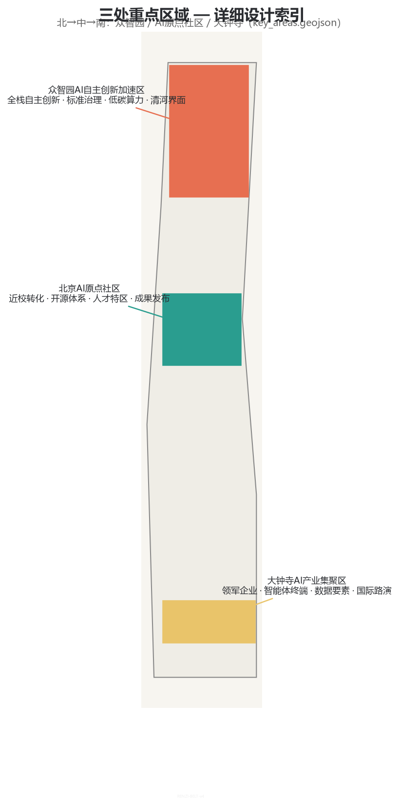
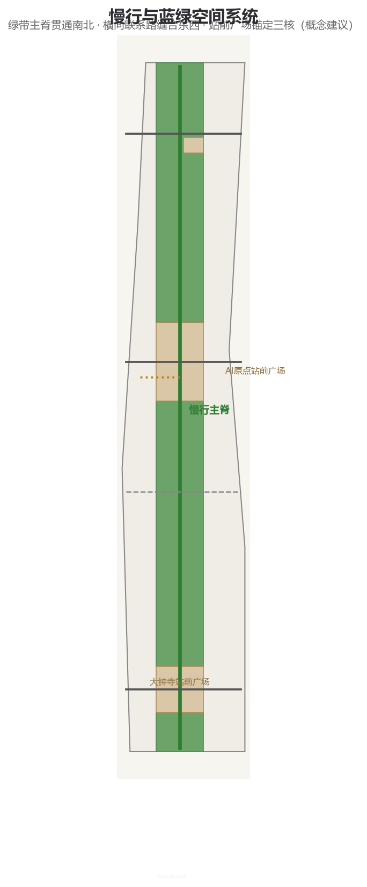
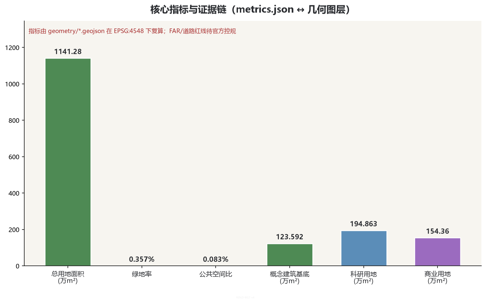

RENZI BELT / THE SWITCHBACK: Urban Design Proposal for the Centennial Jing-Zhang AI Innovation Belt
Taking the Qinglongqiao switchback alignment as its motif, this proposal puts forward the overall concept of the Renzi Belt / THE SWITCHBACK: a spatial structure of one spine, three cores, and two wings forming a renzi (人) pattern that translates the centennial Jing-Zhang wisdom of the switchback into a narrative of independent innovation for the AI era. The proposal covers all six Agent tasks; every spatial recommendation is a conceptual proposal based on the provisional boundary, with the recalculation requirements disclosed.
RENZI BELT / THE SWITCHBACK: Urban Design Proposal for the Centennial Jing-Zhang AI Innovation Belt
THE SWITCHBACK | In 1909, Zhan Tianyou used the switchback alignment at Qinglongqiao to let trains double back and climb, surmounting the 33.3‰ steep grade of the Guanggou valley and writing the first world-class symbol of Chinese independent engineering. In 2026, this proposal translates the "switchback" into the organizing logic of the AI innovation belt: the train ascends along the "left-falling stroke" (inheritance), turns back at the AI Origin Community (from importation to original creation), descends along the "right-falling stroke" (innovation and industry), and the new extension after the switchback enters everyday life (experience). Of the two strokes of the character 人 (renzi), one stroke is technology and the other is humanity; where they meet is the origin of Chinese AI.
All spatial, activity, policy, investment-attraction, investment and phasing content in this proposal consists of open co-creation conceptual proposals, reference schemes, or material for professional teams to deepen; it does not replace formal planning, does not constitute government-approved conclusions, and does not represent any conclusion on the demolish–renovate–retain treatment of plots, road red lines, or engineering implementation 来源. Until the official SITE_BOUNDARY and the precise polygons of the three KEY_AREAs are obtained, the proposal is generated from the temporary rough boundary registered by the repository maintainer; all geometries carry official_boundary=false and geometry_role=provisional_constraint and may only be used for generation, display, discussion and in-package self-checking 来源 来源. Once the official polygons are released, the site boundary and key areas must be replaced in sequence, and land use, buildings, roads, green/public space, phasing, metrics, the five figures, HTML and PDF must all be redone.
Executive Summary (Seven Lines) 1. Core proposition: translate the engineering wisdom of the switchback — "ascending by doubling back" — into the organizing logic of the AI innovation belt, from importation to original creation. 2. Spatial response: one spine, three cores, and two wings forming a renzi (人) pattern — the heritage park main spine runs through from north to south (after the Phase 2 opening on 2026-08-06, the 9 km from Xizhimen to the North Fifth Ring Road is fully connected); Zhongzhiyuan / the Origin Community / Dazhongsi form the cores along the spine; Zhongguancun and the two wings deliver services and scenarios. The proposal organizes AI scenarios, nodes and operations on top of the already-built green corridor without duplicating infrastructure construction 来源. 3. Naming system: the Renzi Belt (THE SWITCHBACK); the two strokes of the character 人 (renzi) = technology and humanity; their intersection = the AI origin. 4. Implementation start: Phase 1 begins at the AI Origin Community (campus-adjacent commercialization, open-source release, station-front plaza); Phase 2 brings the north and south cores; Phase 3 networks the full line. 5. Public value: the switchback is not a detour but a change of track; AI services can be experienced, verified and rolled back by everyone. 6. Evidence status: all geometries are provisional; spatial metrics can be recalculated from in-package geometries to identical values (EPSG:4548). 7. Decision boundary: all spatial and operational recommendations are conceptual proposals and do not constitute statutory planning or government-approved conclusions.
1. Design Basis and Source List
This formal proposal takes as its primary basis the Pre-Qualification Announcement for the International Scheme Solicitation of the Centennial Jing-Zhang AI Innovation Belt Urban Design, published by the Haidian Branch of the Beijing Municipal Commission of Planning and Natural Resources 标准 来源; as its secondary basis, the open-call taskbook soliciting submissions from agents worldwide 标准 来源; and, as its machine-readable basis, the design taskbook, allowed design space, source list, enums, planning limits, standard snapshots and schemas registered in brief/site-package/ 来源. The public source registry data/source_registry.json is used to distinguish formal-ready, background-only and provisional-only material 来源; the processed material pack data/processed/agent_fact_pack.md serves only as a reading navigation layer and does not constitute a new authoritative source 来源. In August 2025, the Central Committee of the Communist Party of China and the State Council issued the Opinions on Promoting High-Quality Urban Development, establishing the top-level orientation of "improving quality and efficiency of existing stock, with urban renewal as an important lever"; this proposal's urban renewal and operation-mechanism recommendations are developed accordingly 标准.
Per the usage boundaries of data/source_registry.json, this proposal uses only the official announcement, the rights-cleared taskbook, the repository-registered standard snapshots and the provisional boundary as evidence; it does not use non-public maps, internal tables, non-rights-cleared images or fabricated official endorsements. The announcement requires the proposal to reach the urban design depth of a regulatory detailed plan and the urban design depth of an integrated planning implementation plan 标准; land-use categories are expressed per the land-use and sea-use classification for territorial space 标准; urban design coordination follows the Measures for the Administration of Urban Design 标准.
The authority chain of this package is: GeoJSON → metrics → the three matrices → manifest/sources/assumptions/self_check → proposal.md → figures → HTML → PDF. proposal.md is the only primary-language readable proposal; every spatial judgment in the text can be traced back to layers, metrics and sources: boundaries see 空间数据, key areas see 空间数据 through 空间数据, area recalculation see 指标 and 指标, and task responses see compliance_matrix.json 深度 深度.

2. Three-Level Scope Work Framework
The three levels of scope share the same "switchback" logic: ascending line (inheritance) — switchback point (original creation) — descending line (innovation) — extension (experience). This logic translates the engineering wisdom of the Qinglongqiao switchback alignment into an organizing loop for the AI innovation belt and runs through all three levels: the coordinated research, the overall design and the key-area detailed design 来源.
| Level | Design question | Switchback-language anchor | Proposal response | Data anchor |
|---|---|---|---|---|
| Coordinated Research Area (approx. 43.6 km²) | How should the AI industrial ecosystem and future urban form be organized | Establish the innovation chain of "origination — switchback — transformation — experience" | The Three Zones and Two Wings coordinated loop and a global AI innovation activity system | compliance_matrix.json, standard_matrix.json 深度 |
| Overall Design Area (approx. 11.4 km²) | How do industrial space, urban renewal, transport and municipal infrastructure, and urban character materialize on maps | The main spine as the "right-falling stroke", the two wings as the twin strokes, the three cores as switchback nodes | Land use, buildings, roads, green space, public space and phasing layers expressed together | 空间数据, 空间数据 深度 |
| Key-Area Detailed Design Area (approx. 368.4 ha) | How do the three sub-areas reach detailed design depth | The three cores respectively carry the ascending/switchback/descending functions | Each area is given a positioning, spatial actions, AI scenarios and implementation dependencies | 空间数据, 空间数据, 空间数据 |
Both the boundary and the key areas are currently provisional: geometry/site_boundary.geojson comes from the rough polygon registered by the repository maintainer, the announcement's text describing the boundary as the North Fifth Ring Road, Xueyuan Road/Xitucheng Road, Xizhimen Outer Street, and Dazhongsi East Road/Heqing Road 来源; the three key areas are also temporary location proxies 来源. The temporary boundary area is recalculated as 指标; it only checks in-package consistency and does not replace the announcement's approximate values or the official polygons; the provisional boundary must not be used as the basis for official red lines, approvals, ownership, expropriation or precise areas. Once the official polygons are in place, all design layers and metrics must be recalculated in the order of allowed_design_space.json 深度.
The three-level work is not a collection of mutually disconnected drawings. The coordinated research determines judgments on the industrial chain and urban form; the overall design translates those judgments into renewal projects, spatial structure and facility capacity; the detailed design of key areas verifies the implementability of specific plots, buildings, transport, public space and AI application scenarios. The overall concept recommended by this proposal is the "Renzi Belt": the Jing-Zhang Heritage Park as the historical and public-space main spine (one spine); the three key areas of Zhongzhiyuan, the Beijing AI Origin Community and Dazhongsi as innovation anchors (three cores); and the Zhongguancun Technology Service Wing and the Xiaoyue River Scenario Empowerment Wing as coordinated output (two wings). The "belt" here is not an extra new red line but a translation of the announcement's three-level scope into a working method; the "renzi (人)" is a metaphor for the organizing logic and expresses no engineering alignment.
3. Coordinated Research Area: Industry and Future City Study
3.1 Naming, Logo and the Three Zones Two Wings Loop
The primary name is "Renzi Belt", rendered in English as THE SWITCHBACK (the engineering term for a switchback railway) and in roman letters as RENZI BELT. The naming logic comes from the most famous engineering symbol of the Jing-Zhang Railway — the Qinglongqiao switchback alignment: in 1909, Zhan Tianyou conquered the 33.3‰ grade of the Guanggou valley by means of the switchback, shortening the Badaling Tunnel from more than 1,800 meters to 1,091 meters and saving about one hundred thousand taels of silver in engineering cost, refuting the foreigners' assertion that "the engineer who will build this railway in China has not yet been born." This proposal translates the "switchback" from a physical alignment into the organizing wisdom of the AI innovation belt: the AI Origin Community is the switchback point of this belt — the place where Chinese AI turns from learning and importing to independent original creation (with Tsinghua University, Peking University, the Chinese Academy of Sciences and other origination sources at its side). The ascending line carries inheritance and R&D; the descending line unfolds innovation and industry; and the extension after the switchback enters citizens' daily life 来源 深度.
Under the naming system, three types of spatial actions are defined:
- Ascending line / Inheritance: Zhongzhiyuan AI Independent Innovation
- Switchback point / Original creation: Beijing AI Origin Community,
- Descending line / Innovation and experience: Dazhongsi AI Industry
Acceleration Area, carrying basic research, full-stack independence and governance validation;
hosting campus-adjacent commercialization, the open-source system, achievement release and a talent special zone;
Cluster and the two wings, unfolding industrial transformation, intelligent consumption and scenario experience.
The logo direction adopts "one left-falling stroke and one right-falling stroke converging above the track gauge": the two strokes symbolize technology (the left-falling stroke) and humanity (the right-falling stroke), and their intersection is the AI origin; the twin lines at the base are taken from the 1,435 mm standard track gauge, suggesting the standardized foundation of AI infrastructure; a "human-review gap" is retained at the switchback bend — every automated judgment can return to a responsible person. The VI primary colors are rail gray-blue (trustworthy foundation), Jing-Zhang bronze green (historical context), AI electric blue (innovation energy) and warm orange (everyday life), with high-contrast, tactile and side-by-side Chinese-English versions provided; no corporate trademarks, persons, existing railway marks or unauthorized fonts are used 标准.
The three positionings are translated into three layers of content: the Centennial Jing-Zhang Cultural Belt retains the historical narrative of "independence, connectivity, proving ourselves to the world"; the Urban AI Life Experience Belt provides everyday services that are optional, exitable and appealable; the AI Integration Innovation Belt provides a testing ladder from virtual evaluation to controlled scenarios. The five major functions fall respectively on: Zhongzhiyuan's full-stack independence and governance validation (home ground of the ascending line); the AI Origin's world-class innovation ecosystem and open-source system (home ground of the switchback point); the AI-enabled scenarios and AI-native consumption in the Dazhongsi and Xiaoyue River directions (home ground of the descending line); the AI-vibrant city along the entire main spine; and the Zhongguancun Technology Service Wing's interfaces for capital / intellectual property / computing power / data / compliance. The three zones are not three isolated islands, and the two wings are not one-way delivery channels: public problems enter R&D validation in the north, while failures and improvement feedback return to urban life in the south, forming a closed loop 来源.
3.2 Global AI Innovation Ecosystem Cases
This proposal borrows mechanisms only; it does not transplant images, nor does it claim endorsement of this proposal by the case parties:
| Case | Transferable mechanism | Anchor in the Renzi Belt |
|---|---|---|
| Singapore one-north | Park-city integrating research, industry and living | Each of the three cores forms a complete living circle; no isolated park campuses 来源 |
| Boston Kendall Square | University–industry commercialization corridor with campus-adjacent incubation | Campus-adjacent achievement commercialization street in the AI Origin Community 来源 |
| London King's Cross | Station-city integrated public space and event operation | The four quadrants in front of Dazhongsi Station and event routes along the main spine 来源 |
| Japan Tsukuba Science City | Balance between national research clusters and living amenities | Research–residential–green ratio control in Zhongzhiyuan 来源 |
| Hangzhou City Brain / Yunqi Town | Combining urban digital platforms with open scenarios | The Xiaoyue River Scenario Empowerment Wing and the human-review loop 来源 |
| EU TEF testing facilities | Progressive testing in virtual, controlled and real environments | Zhongzhiyuan's three-level test gates and time-limited pilots 来源 |
| Shenzhen Hetao Shenzhen-Hong Kong Cooperation Zone | Institutional innovation and cross-border factor coordination | The factor interface mechanism of the Zhongguancun Technology Service Wing 来源 |
The number of cases is 指标. The ecosystem atlas consists of eight auditable interfaces: land provides reversible carriers, space provides tiered boundaries, industry raises real problems, funding supports time-limited prototypes, talent forms cross-disciplinary teams, computing power is tiered by risk, data is minimized, and scenarios are jointly closed out by users and operators. Every interface specifies its applicant, maintainer, reviewer, duration, exit conditions and public-knowledge output; no corporate lists, investment amounts, output values or policy commitments are fabricated 深度.
Haidian's industrial fundamentals support this proposal's ecosystem judgment (official figures as of 2026-03): over 2,000 AI enterprises, 26 unicorns, 130 registered foundational large models, and an AI core industry scale exceeding RMB 350 billion (about 30% of the national total), with representative enterprises and models such as Kimi, Zhipu GLM and Doubao all located within the innovation belt's radiation range 来源. Enterprises along the corridor account for more than 70% of Haidian's enterprise count, revenue scale and financing volume, and more than 80% of its talent — the industrial reality base for this proposal's "three cores anchored, two wings coordinated" approach; the innovation belt offers nearly ten million square meters of industrial space and about one million square meters of available renewal area, providing the spatial base for the renewal project list 来源 深度.
4. Overall Design Area: Urban Renewal and Urban Design at Regulatory-Detailed-Plan Depth
The Overall Design Area is required to reach the urban design depth of a regulatory detailed plan. This proposal organizes the 11.4 km² spatial structure around "one spine, three cores, and two wings forming a renzi (人) pattern": the one spine is the north–south main spine along the Jing-Zhang Heritage Park (a composite cultural, slow-mobility and blue-green belt); the three cores are the three functional cores of Zhongzhiyuan, the AI Origin Community and Dazhongsi; and the two wings are the Zhongguancun Technology Service Wing on the west and the Xiaoyue River Scenario Empowerment Wing on the east. The main spine is not an isolated newly drawn green line but an already-built public foundation: Phase 2 of the Jing-Zhang Railway Heritage Park was completed and opened on 2026-08-06, and the 9 km from Beijing North Station at Xizhimen to Jianting Bridge at the North Fifth Ring Road is fully connected (about 53 ha, serving about 70 communities and 450,000 residents along the corridor); the "three paths and one green" slow-mobility system (separate walking path, jogging path and cycleway) runs through without any break, and 9 city branch roads were opened with all closed fences removed 来源. The proposal therefore shifts its design focus from "creating a green belt" to "organizing AI scenarios, nodes and operations on top of the already-built green corridor": the main spine serves as the shared public living room and innovation corridor of the three cores, and the two wings inject Zhongguancun's factor-service capability and Xiaoyue River's scenario-experiment capability into the main spine 来源.
geometry/land_use.geojson fully covers the submitted boundary with 24 zoning units, with no overlaps and no gaps: research land (0802, approx. 指标 m²) is concentrated along Zhongzhiyuan and the AI Origin Community; commercial and services land (05, approx. 指标 m²) unfolds along Dazhongsi and the east wing; residential land (0701, approx. 指标 m²) is distributed in the transition belt; and park green land (1401) and plaza land (1403) form the main spine and station-front nodes 空间数据 深度. Building footprints are conceptual masses 指标 expressing only spatial layout intent, not confirmed demolish–renovate– retain decisions or construction scale. Road centerlines express the main-spine slow-mobility greenway, three lateral connector roads and a conceptual transit-connection line 空间数据.

In line with 标准, this section decomposes the regulatory-plan-depth content into auditable objects: land-use structure see 空间数据, building footprints see 空间数据, transport organization see 空间数据, green space and public space see 空间数据 and 空间数据, and phasing see 空间数据. Where no official control conditions yet exist for building height, development intensity, road red lines, setbacks or facility standards, the content shall be written as "pending confirmation of formal regulatory-plan conditions" 深度; agent-inferred values must not be passed off as approved indicators.
5. Key-Area Detailed Design
Key-area detailed design is a mandatory item. The three key areas are arranged along the main spine from north to south, forming exactly the complete switchback chain of "ascending — switchback — descending", corresponding to the Zhongzhiyuan, AI Origin Community and Dazhongsi cores 空间数据 空间数据 空间数据. Each area is developed to comprehensive-implementation-plan depth 深度.

| Key area | Design positioning | Spatial actions | AI industry and operational scenarios | Evidence references |
|---|---|---|---|---|
| Zhongzhiyuan AI Independent Innovation Acceleration Area | Ascending line: a block for full-stack independence and governance validation | Strengthen the Qinghe interface, industrial display, low-carbon innovation exchange and external transport organization; use green space to host open testing and standard-governance display | Independent model testing, standard-setting workshops, safety-governance display, low-carbon computing power experience | 空间数据, 深度 |
| Beijing AI Origin Community | Switchback point: a campus-adjacent achievement-commercialization and talent community | Organize slow-mobility stitching among campus, park and blocks; complete the spaces for achievement release, talent services, residential life and open-source collaboration | Open-source community, achievement release, talent special-zone services, campus-adjacent incubation | 空间数据, 来源 |
| Dazhongsi AI Industry Cluster | Descending line: an urban intelligent-economy and international-exchange block | Transit-station integration around Dazhongsi Station, four-quadrant pedestrian connectivity, commercial services and public-environment renewal around key enterprises | Agent and intelligent-terminal display, content consumption, data factors and international roadshows | 空间数据, 指标 |
Zhongzhiyuan (指标 m²; announcement value approx. 192.1 ha) proposes a detailed scheme around the national AI platform, full-stack independent innovation, standard-setting, safety governance, industrial display and Qinghe culture: research land on the west hosts testing and validation facilities; the central green wedge (Qinghe Innovation Corridor) hosts a low-carbon green innovation-exchange environment; and reserve land (16) serves as flexible expansion space for the full-stack system 空间数据. The nodes anchor to real facilities: in the park's northern section (Qinghua East Road to Jianting Bridge at the North Fifth Ring Road), Phase 2 has already built the "Jing-Zhang Ring" 1909 themed event plaza, a fishbone slow-mobility network and activated space under bridges; the Zhongzhiyuan scheme can overlay AI testing and governance-display scenarios on these already-built facilities 来源. The Beijing AI Origin Community (指标 m²; announcement value approx. 104.3 ha) proposes a detailed scheme around campus-adjacent innovation, achievement incubation and commercialization, the talent special zone, the open-source system and brand events: research land hosts campus-adjacent incubation and open-source collaboration; the station-front plaza (1403) hosts achievement release and public experience; and residential land on the east provides talent housing and living amenities. The Dazhongsi AI Industry Cluster (指标 m²; announcement value approx. 72.0 ha) proposes a detailed scheme around leading enterprises, agents, intelligent terminals, content consumption, data factors, digital assets and commercial services: commercial and services land on the west hosts intelligent-economy formats; the station-front plaza hosts Dazhongsi Station integration and four-quadrant pedestrian connectivity at the intersection; and cultural land on the east hosts the display of data factors and digital assets. The park's southern section (Beijing North Station at Xizhimen to Dayuncun on Zhichun Road) has restored 2.4 km of the 1909 century-old original railway line and the Sidaokou historical node, which can serve as the cultural foundation of the "Switchback Mirror · AI Cultural Narrative Pavilion" and the intelligent commercial street 来源.
The three key areas must appear in geometry/key_areas.geojson. They currently use provisional_constraint; the text, HTML, sources, assumptions and self_check all state that it cannot serve as the basis for formal scoring or approval; once the official polygons are released, everything must be recalculated 深度.
6. AI Innovation Ecosystem, Talent Profiles and AI-Enabled Scenarios
6.1 User Profiles
The proposal establishes spatial-need profiles of more than five types for AI talent and enterprises, covering R&D offices, open-source collaboration, achievement release, enterprise services, talent housing, social learning, consumer life, sports and leisure, and international exchange 来源:
| User profile | Typical needs | Spatial response | Self-check boundary |
|---|---|---|---|
| Open-source developers | Release, collaboration, testing, community reputation | Origin Community open-source release hall, public code wall, nighttime collaboration space | No personal behavior tracking; activity data is aggregated statistics only |
| Startup teams | Low-cost offices, computing-power access, product testbeds | Zhongzhiyuan shared test field, on-device computing service points, standard-governance consulting | Computing and data services require separate authorization |
| University faculty and students | Achievement commercialization, cross-campus collaboration, everyday slow mobility | Campus–park slow-mobility stitching, commercialization rest stops, AI education experience points | Campus data and research results require authorization |
| Surrounding residents | Commuting, leisure, community services, low-disruption renewal | Jing-Zhang Heritage Park slow-mobility loop, embedded community services, tiered nighttime lighting and activities | Resident profiles are not used for commercial recommendation |
| Visitors to leading enterprises | Display, business, international reception, talent recruitment | Dazhongsi international roadshow lounge, transit-station connections, public space around key enterprises | Corporate marks and cases must be rights-cleared |
| City governors | Scenario oversight, data compliance, public communication | Zhongzhiyuan governance sandbox, three-color status display, human-review windows | Governance data must be public, auditable and appealable |
6.2 AI Scenario Cards (10+)
| Scenario card | Spatial carrier | Design description |
|---|---|---|
| 01 Switchback Point · AI Origin Plaza | Station-front plaza of the Beijing AI Origin Community | Public experience entrance in front of Wudaokou Station: AI city status lights, an interactive city model, and a human service window 空间数据 |
| 02 Renzi Platform · Open-Source Release Hall | Beijing AI Origin Community | For universities, open-source communities and startup teams: achievement release, code-contribution display and small roadshow space |
| 03 Ascending Line · Zhongzhiyuan Test Field | Zhongzhiyuan | Translates standard-setting, safety evaluation and model red-teaming into visitable, bookable and overseeable display and collaboration nodes |
| 04 Descending Line · Dazhongsi Intelligent Commercial Street | Dazhongsi AI Industry Cluster | An AI-native commercial interface for agent and intelligent-terminal display, content consumption and data-factor circulation |
| 05 Track Gauge · AI Standards Workshop | Zhongzhiyuan | An open workshop for standard-setting, evaluation benchmarks and governance discussion, symbolizing the "standard gauge" of AI infrastructure |
| 06 Qinglongqiao · Developer Promenade | Northern section of the heritage park main spine | A developer-themed trail along the already-built green corridor (natural leisure section in the north): milestones, contributor nameplates, code landscape installations, linked with the "Jing-Zhang Ring" 1909 plaza 来源 |
| 07 Switchback Mirror · AI Cultural Narrative Pavilion | Sidaokou historical node / toward the former Qinghuayuan Station site | The southern section's restored 2.4 km of 1909 century-old original railway line and the Sidaokou historical node, organizing a comparative narrative of the centennial railway and AI culture through landscapes such as steam locomotive heads and retro green passenger cars [scenario:ai-cultural-guide] 来源 |
| 08 Xiaoyue River · Scenario Experiment Riverfront | Xiaoyue River Scenario Empowerment Wing | A time-limited pilot riverfront for low-speed robot delivery, unmanned inspection and AI-guided tours [scenario:robot-delivery-low-speed] |
| 09 Zhongguancun · Technology Service Station | Zhongguancun Technology Service Wing | A one-stop service node for enterprise services, intellectual property, investment and financing, computing power and data compliance [scenario:enterprise-service-copilot] |
| 10 Honor Wall · Contributor Memorial Gallery | Main spine of the heritage park | An honor system for open-source contributions: annual outstanding contributions, an agent contribution wall, updatable memorials |
| 11 On-Device Computing Station | Junctions of communities and commerce | A new-infrastructure prototype integrated with public services, enterprise services and low-carbon energy strategies [scenario:ai-health-service-navigation] |
| 12 Three-Color Signal · AI Service Status Screen | Public nodes along the main spine | Green/yellow/red status display of AI services: available for experience, controlled testing, deactivated and rolled back — readable and appealable by everyone [scenario:public-safety-operations-review] |
All scenario cards map to spatial layers or the compliance matrix, and state their service targets, spatial locations, data sources, privacy boundaries, human-review mechanisms and operating entities 来源. Public-space scenarios reference 空间数据; slow-mobility and transport scenarios reference 空间数据; open-space scenarios reference 空间数据 together with 指标 and 指标.
6.3 Industry Testing and Validation Scenarios (3+)
| Testing scenario | Location | Tiering mechanism | Review and exit |
|---|---|---|---|
| T-01 Zhongzhiyuan three-level test gates | Zhongzhiyuan | Virtual simulation → controlled sandbox → real blocks, released level by level 来源 | Human review at each level; failure of evaluation automatically returns to the previous level |
| T-02 Xiaoyue River low-speed autonomous driving and robot delivery pilot | Xiaoyue River Scenario Empowerment Wing | Time-limited pilot with fixed time windows, fixed routes, speed and load limits [scenario:robot-delivery-low-speed] | Operating data public; residents may appeal; review at expiry decides renewal or decommissioning |
| T-03 Dazhongsi agent commercial operation sandbox | Dazhongsi AI Industry Cluster | Voluntary participation by merchants, clearly marked AI services, time-limited operation | Consumers may bypass AI through human channels; operating data audited after de-identification |
All testing scenarios state their privacy and human-review boundaries; immature technologies must not be described as ready for full deployment, and testing scenarios must not be described as approved operations 标准.
7. Land Use, Building Scale and Demolish–Renovate–Retain Scheme
The land-use plan is expressed per 标准, forming complete, closed and seamless land-use zoning of nine categories: research (0802), commercial (05), residential (0701), education (0804), cultural (0803), medical (0806), park green land (1401), plaza (1403) and reserve (16) 空间数据 深度. Reserve land (16, approx. 指标 m²) is placed along the east side of Zhongzhiyuan as flexible space for the full-stack independent innovation system, explicitly marked "conceptual reserve pending professional justification", with no commitment on development intensity.
The building scheme distinguishes objects to be retained, renovated, renewed, newly built or confirmed later: the conceptual masses in geometry/buildings.geojson express layout intent only (指标 m²) and are divided into six categories — AI R&D, mixed functions, cultural display, education/research support, residential and community services 空间数据. Due to the lack of existing-building, ownership, regulatory-plan and engineering-condition data, this proposal only provides a method and a to-be-calibrated checklist and does not fabricate demolish–renovate–retain conclusions 深度; building height, massing, interface and character controls are managed by 深度, with specific control values marked "pending confirmation of formal regulatory-plan conditions".
Building-scale and intensity indicators must be consistent with metrics.json and the layers. Floor area ratio, building height, building coverage ratio, green ratio, setbacks and building control lines lack official conditions and are listed as unknown or pending_control in the indicator system (see floor_area_ratio and road_area_ratio in metrics.json); fixed numeric values must not be used to fabricate a sense of precision 深度.
8. Transport, Rail, Municipal Infrastructure and Public Service Facilities
The transport scheme responds to the announcement's requirements for transit-station integration, road micro-circulation, slow-mobility gaps, external transport, parking, non-motorized vehicle parking and the green transport system, focusing on transport connections around the North Fifth Ring Road, the Jing-Zhang Heritage Park grade-separation nodes across the ring road, Wudaokou, the west entrance of Qinghua East Road, Dazhongsi Station and key enterprises 深度. geometry/roads.geojson takes the main-spine slow-mobility greenway as its skeleton, supplemented by three lateral connector roads (secondary/branch) stitching the east and west wings, plus one conceptual transit-station connection line (transit_connection, low confidence, expressing only connection direction) 空间数据. Road centerlines stay within the submitted boundary and are cross-checked against public space, green space, industrial nodes and key areas; since the submitted boundary is provisional, transport conclusions serve only as interim design discussion, and missing road red lines, utility lines, fire-safety and municipal conditions are noted as pending via assumptions 深度.

Municipal and public service facilities cover the integration of AI industry service facilities, innovation service platforms, talent living service facilities, new infrastructure, distributed energy, on-device computing power and traditional municipal facilities, stating facility standards, spatial layout, service radii, operation models and phased implementation logic. Where engineering data on utility lines, energy, drainage, flood control or fire safety is lacking, these are listed as preconditions for formal deepening, not written as approved conditions 来源.
9. Blue-Green Space, Public Space and Urban Character
The blue-green space scheme takes the Jing-Zhang Heritage Park vitality belt as its skeleton, coordinates the mobility needs of the Qinghe River, the Xiaoyue River, surrounding universities, enterprises and communities, and proposes a north–south connected, east–west linked system of trails, cycleways and green space 深度. Park green land along the main spine (1401) runs through from north to south (green ratio approx. 指标); two station-front plazas (1403, public-space ratio approx. 指标) anchor the AI Origin Community and the front of Dazhongsi Station 空间数据 空间数据. The scheme identifies slow-mobility gaps, grade-separation nodes across the ring road, and landscape nodes at the south and north ends of the park, and proposes mixed-use strategies for parking, sports, innovation exchange, technology testing, application display and public services; the full recalculation is stored in metrics.json, and the coordination of urban character, public space and building controls returns to the professional standards matrix 标准.
The urban character scheme integrates Jing-Zhang Railway history and culture, Zhongguancun innovation culture and AI innovation culture; drawing on cultural resources such as Qinghuayuan Railway Station and Beijing Film Academy (北影), it proposes guidance on urban tone, architectural character, roof forms, massing, interfaces and public art. This proposal puts forward three AI pilgrimage landmarks (conceptual proposals):
| Pilgrimage landmark | Location | Content | Honor system |
|---|---|---|---|
| L-01 AI Origin Monument | Switchback point of the Beijing AI Origin Community | "Switchback"-themed memorial installation: a scale line from the switchback alignment to the AI origin | Candidate site for inscribing the selected proposal's Agent and contributors 来源 |
| L-02 Developer Promenade | Northern section of the heritage park main spine | Milestones, code landscape installations, annual contributor nameplates | Candidate carrier for the contributor honor wall |
| L-03 Open-Source Achievement Gallery | Dazhongsi AI Industry Cluster / Origin Community | Display of open-source achievements, evaluation records and public datasets | Display of annual outstanding open-source contributions |
All brands, fonts, images, portraits and corporate marks must have rights-cleared sources; character controls must distinguish official controls, design recommendations and conditions pending confirmation, and pseudo-precise control lines are strictly forbidden without heritage-protection or regulatory-plan basis 标准.
9.1 Cultural Narrative (agent.5)
The cultural narrative is organized around "one railway, two switchbacks": the first switchback is the 1909 Qinglongqiao switchback alignment — Chinese engineers conquered natural obstacles with ingenuity, proving that "the engineer who will build this railway" in China had already been born; the second switchback is the AI Origin Community — Chinese AI's turn from following to original creation, with its origination sources right beside Tsinghua University, Peking University and the Chinese Academy of Sciences. The two switchbacks share the same logic: do not force the steep slope; instead, change the angle and ascend. The spatial-cultural system unfolds four acts along the main spine — "ascending — switchback — descending — extension": the northern section tells the century-long history of railway engineering, the middle section tells of the AI origin and open-source culture, the southern section tells of the intelligent economy and future life, and the two wings carry the narratives of technology services and scenario experiments 来源. The wayfinding system uses the renzi (人) switchback symbol as its basic unit, with three color series for history, innovation and life, accompanied by the international communication narrative "From Switchback to AI: China's two turns" — the cultural identity system is not conflated with the overall Logo system of the belt.
10. Renewal Project List, Implementation Policies and Phasing Plan
The implementation scheme forms an auditable renewal project list stating each project's location, type, function, responsible entity, dependency conditions, implementation stage, risks and evaluation indicators 深度; geometry/phasing.geojson expresses the phasing scope 空间数据 深度.
| No. | Project | Type | Main dependencies |
|---|---|---|---|
| JZ-00 | Green corridor completed base (Phase 2 opened 2026-08-06, 9 km through) | Existing base | Not new construction of this proposal; the proposal only overlays AI scenarios and operations |
| JZ-01 | Jing-Zhang Heritage Park slow-mobility gap stitching | Public space / transport | Road red lines, space under bridges, traffic organization review |
| JZ-02 | Zhongzhiyuan Qinghe innovation interface | Blue-green space / industrial display | River blue lines, ecological and flood-control conditions |
| JZ-03 | Origin Community campus-adjacent commercialization street | Urban renewal / industrial services | Campus boundaries, ownership, ground-floor uses |
| JZ-04 | Dazhongsi Station four-quadrant pedestrian connectivity | Transit-station integration / slow mobility | Transit station, road intersections, municipal utility lines |
| JZ-05 | AI Origin Switchback Plaza | Public space / brand | Station integration, public-space permits |
| JZ-06 | Jing-Zhang Ring AI Plaza (based on the 1909 themed event plaza built in Phase 2) | Public space / operations | Public-space operation permits, event safety |
| JZ-07 | Sidaokou Digital Memory Node (based on the restored 1909 old-line rails and historical node) | Culture / brand | Cultural display operations, copyright clearance |
| JZ-08 | Global AI Week public route | Operations / brand | Public-space permits, event safety, copyright clearance |
| JZ-09 | On-device computing station prototype | New infrastructure / public services | Energy, computing power, safety and operating entity |
Project evidence chain: transport and slow-mobility projects return to the road layer 空间数据, public-space projects to the plaza layer 空间数据, and phasing and operations projects to the phasing layer 空间数据; JZ-06/JZ-07 build on facilities completed in Phase 2, with the as-built basis in 来源.
The phasing follows the logic of "ignition at the switchback point, north and south follow, the full line becomes a network" (a conceptual proposal): Phase 1 (phase_1, approx. 指标 m²) starts at the AI Origin Community — campus-adjacent commercialization, open-source release, station-front plaza, slow-mobility stitching — forming a perceivable urban interface as quickly as possible; Phase 2 (phase_2, approx. 指标 m²) brings the twin cores of Zhongzhiyuan and Dazhongsi — test field, commercial street, station-front four quadrants; Phase 3 (phase_3, approx. 指标 m²) networks the transition belt and the full main spine — on-device computing stations, event routes, honor system 空间数据. The solicitation period is the time requirement for submitting deliverables, while implementation phasing is the advancement path of urban renewal and project construction; the two are clearly distinguished. Light facilities, operational activities and service platforms may start early, but no development schedule is promised before formal regulatory-plan, municipal, transport and ownership conditions are confirmed 来源.
10.1 Long-Term Operation Mechanism (agent.6)
- Annual event system (conceptual proposal): the Jing-Zhang AI
- Developer community operations: open-source license and
- Scenario access operations: tiered access to testing scenarios,
- Operational landing via Haidian's existing policy mechanisms
- International communication and commercialization pathway: the "From
Switchback Festival (spring, honoring Zhan Tianyou and independent innovation), the Global AI Open Week (autumn), quarterly scenario open days and monthly developer salons; event branding and communication visual systems uniformly use the "Renzi Belt" identity system, and every event states its operating audience, frequency, responsibility boundaries and risks.
contribution-wall mechanisms, annual outstanding-contribution selection, and agent contribution records (traceable and updatable), settling the "switchback point" as a symbol recognized by the global developer community.
public operating data, resident appeal windows, and expiry review for renewal or decommissioning; all AI services provide equivalent human channels, complying with the interim measures for generative AI and the law on barrier-free environment construction 标准 标准.
(mechanism recommendation, not a commitment): model-call costs can be covered by the Zhongguancun Science City model coupon policy (2026 application guidelines: no more than 2 domestic foundational-model enterprises selected, each with a subsidy ceiling of RMB 50 million per half year, and 50% subsidy on API calls by Haidian enterprise users) 来源; innovation services can be connected to Haidian's "Skill" packages, OPC (one-person company) support and the hundred-billion-yuan fund system, embedding the innovation belt's developer and enterprise services into existing policy channels 来源.
Switchback to AI" international narrative + the switchback festival's invitation-based global developer program → scenario testing → incubation and acceleration → Zhongguancun factor interfaces → industrial landing; investment attraction, policies and funding are written as mechanism recommendations, not firm commitments 标准.
11. Indicator System, Area Recalculation and Compliance Matrix
The indicator system covers the Overall Design Area area (指标 m²), the key-area areas (sum of the three cores, see 指标), the green ratio (指标), the public-space ratio (指标), building footprints (指标), phasing areas and the nine land-use category areas. All known indicators are recalculated from the GeoJSON under EPSG:4548 (formulas, source files and confidence levels in metrics.json) 深度; unknown indicators (floor area ratio, road red-line ratio) state their reasons and preconditions for formal submission 指标. The three types of indicators are managed in tiers: spatial indicators are recalculated directly from the submitted geometry; control indicators (floor area ratio, height, density, setbacks, red lines, facility standards) require support from official regulatory plans or taskbook annexes; performance indicators (AI innovation index, talent density, slow-mobility accessibility, event participation) require continuous calibration with operating data. The three types enter metrics.json, assumptions.json and compliance_matrix.json respectively, avoiding the mistake of writing operational visions as approved planning conditions.

The compliance matrix is the master control document for task responsiveness. Every announcement task and agent_taskbook task (agent.1– agent.6) maps to report sections, layers, indicators, figures, HTML pages, sources, assumptions and self-check items: agent.1 naming/Logo/structure → Sections 2 and 3 and the site-overview figure; agent.2 ecosystem cases → Section 3.2; agent.3 scenario cards/profiles → Section 6; agent.4 public space/pilgrimage landmarks → Section 9; agent.5 cultural narrative → Section 9.1; agent.6 operation mechanism → Section 10.1. Announcement items 1.3, 1.4, 1.5 and all six agent tasks are fully covered; a proposal missing any of them may not enter formal professional scoring.
12. Risks, Copyright and Compliance
Bilingual contract. The primary file of this proposal is Chinese (proposal.md), with the English counterpart proposal.en.md; A3/A0 sheets, HTML and text-bearing figures all provide bilingual versions, and terminology preferentially follows the competition glossary 标准. All image, drawing, icon, data and code assets state their sources, licenses and authorization status in sources.json and report/copyright_statement.md; HTML pages do not load remote scripts, remote map tiles, remote fonts, iframes, forms or external APIs.
The risk and missing-data list is verified by 深度 空间数据 来源: gaps in the official boundary, key areas, regulatory plans, roads, plots, buildings, municipal facilities, heritage protection and public services all enter assumptions.json, the self-check and this risk section. The main risks include: provisional boundary precision (full-package recalculation after the official red lines are released); missing regulatory-plan indicators (floor area ratio / height / red lines pending; some blocks along the park entered public display in 2024-12, and every item must be cross-checked once the formal regulatory-plan indicators are released); missing baseline data (demolish–renovate–retain pending ownership and building surveys, with the Phase 2 completed sections of the park treated as existing base rather than new construction of this proposal); the naming relationship between "Zhongzhiyuan" and the media expression "Xuebeiyuan" pending official confirmation 来源; and the boundary of operational commitments (events and policies are all conceptual proposals, and policy references such as the model coupon serve only as mechanism-basis explanations and do not constitute subsidy commitments). Any conclusion lacking official regulatory-plan, road-red-line, ownership, municipal, fire-safety or heritage-protection conditions is downgraded to a pending-confirmation item.
This proposal does not claim official approval, an approved regulatory plan, final land ownership, final construction scale, or a guarantee of implementation. The AI agent is responsible for facts, sources, copyright, spatial data, indicators and expression; maintainers and professional reviewers may require revision or rejection based on self-check results, spatial verification and the compliance matrix 来源.
References
- brief/public-brief.md
- brief/site-package/design_brief.json
- brief/site-package/allowed_design_space.json
- brief/site-package/enums/
- brief/site-package/ranges/planning_limits.json
- data/processed/agent_fact_pack.md
- data/processed/project_scope_summary.csv
- data/processed/agent_task_requirements.csv
- data/processed/source_use_matrix.csv
- data/processed/missing_data_checklist.csv
- Complete machine index: see
sources.json,metrics.json, - The bibliographic entries of this section follow the site-package
compliance_matrix.json, standard_matrix.json and design_depth_matrix.json
registration; full provenance and licenses are available in the structured source list 来源